The Ultimate Tennis Experience L'expérience de tennis ultime
The most complete app to collect statistics for tennis matches. Join players who use data to dominate the court. L'application la plus complète pour collecter des statistiques de matchs de tennis. Rejoignez les joueurs qui utilisent les données pour dominer le court.
The only app which texts the score live! La seule application qui envoie le score par SMS en direct !
In this era of data, if you want to improve your tennis skills, you need data. Note every point, analyze every stroke, and share progress in real-time. À l'ère des données, si vous voulez améliorer vos compétences au tennis, vous avez besoin de données. Notez chaque point, analysez chaque coup et partagez vos progrès en temps réel.
Powerful Features Fonctionnalités Puissantes
Live Tracking Suivi en Direct
- Easily enter how each point ended Saisissez facilement comment chaque point s'est terminé
- Ace, winner, unforced & forced errors Ace, coup gagnant, fautes directes et provoquées
- Note attitude and routine Notez l'attitude et la routine
- Write custom notes per point Écrivez des notes personnalisées par point
Real-time Updates Mises à jour en Temps Réel
- Score computed automatically Score calculé automatiquement
- Share score via text as you play Partagez le score par SMS pendant que vous jouez
- Updates at points, games, or sets Mises à jour aux points, jeux ou sets
- Jump to any score if you miss a part Sautez à n'importe quel score si vous manquez une partie
Deep Analysis Analyse Approfondie
- Match trends and interactive graphs Tendances du match et graphiques interactifs
- Set-by-set detailed breakdowns Analyses détaillées set par set
- Pressure point stats (30-30, 40-40) Stats sur les points sous pression (30-30, 40-40)
- Export as Image or CSV for sharing Exportez en image ou CSV pour partager
App Showcase Galerie de l'App
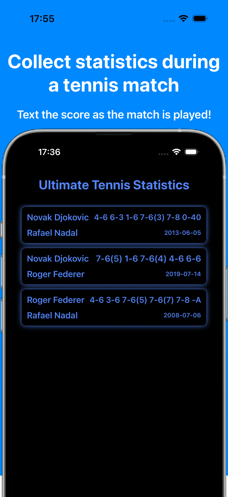
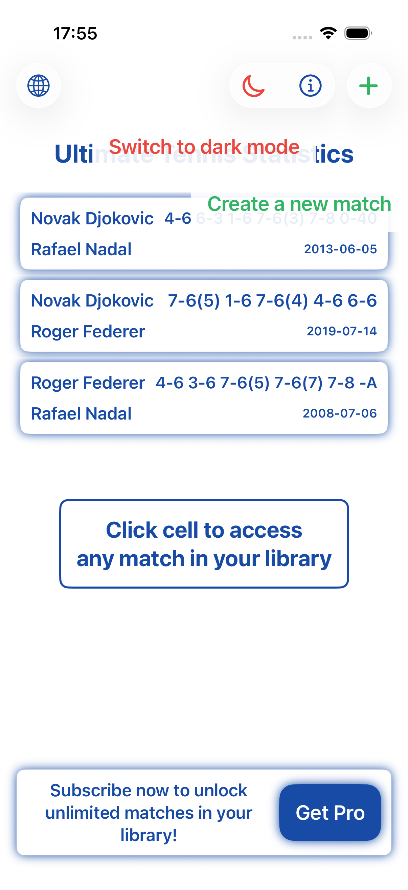
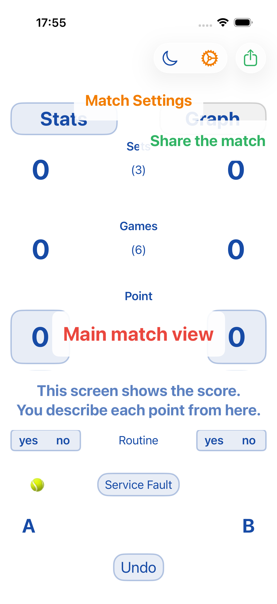
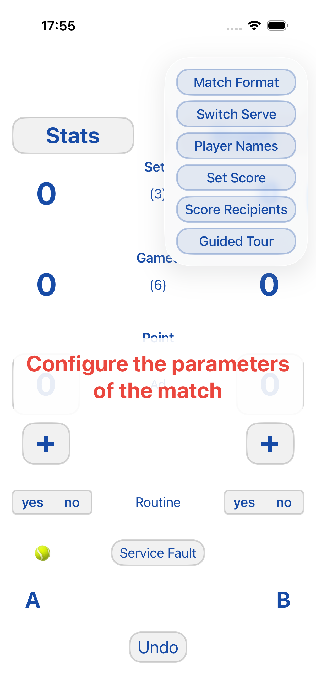
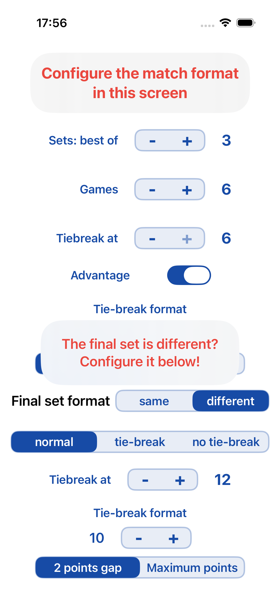
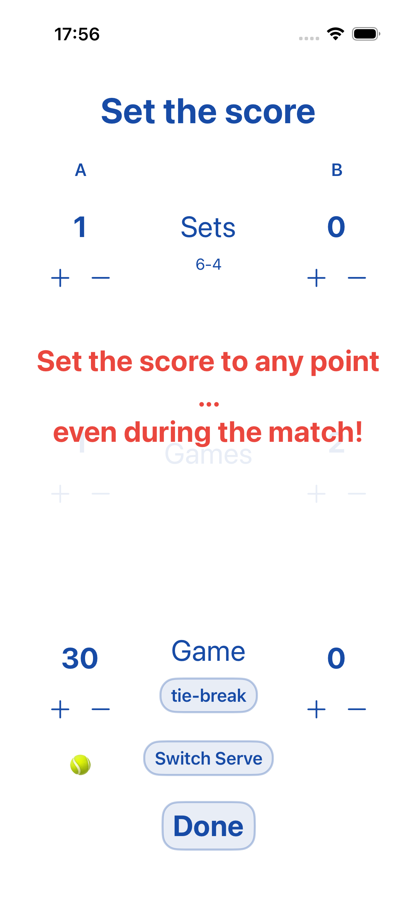
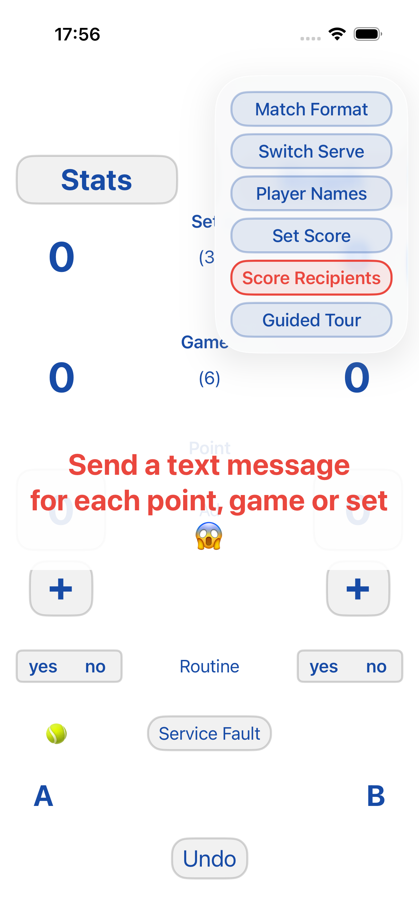
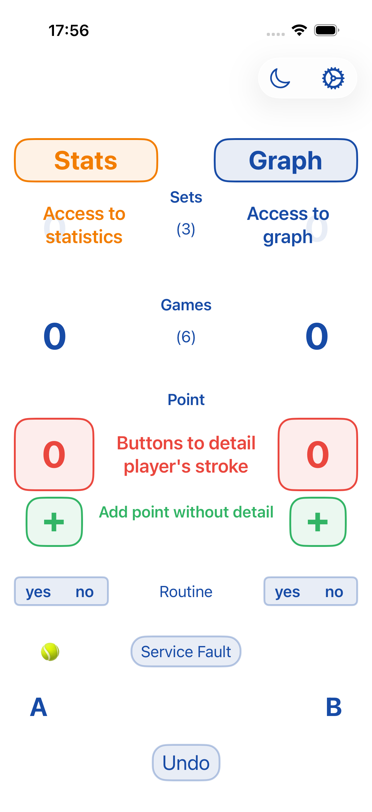
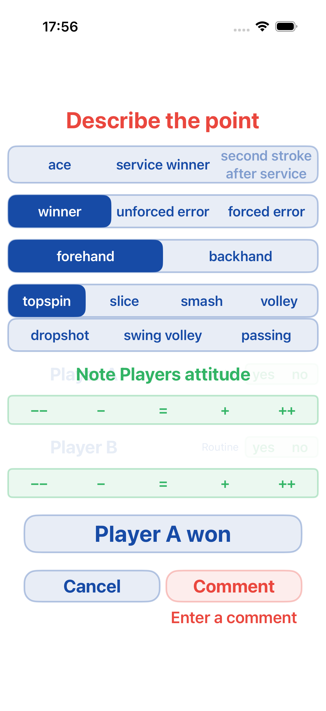
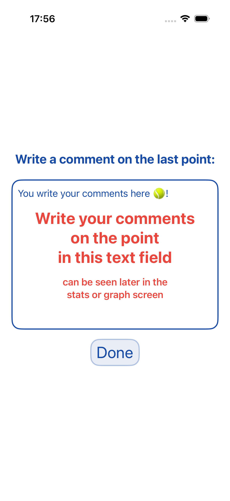
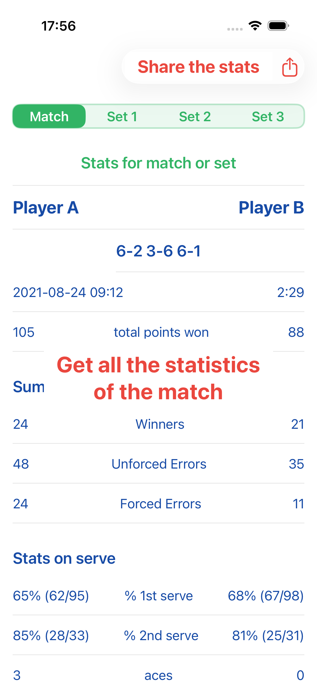
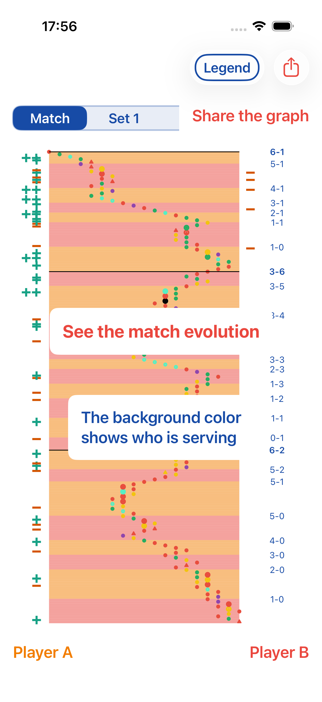
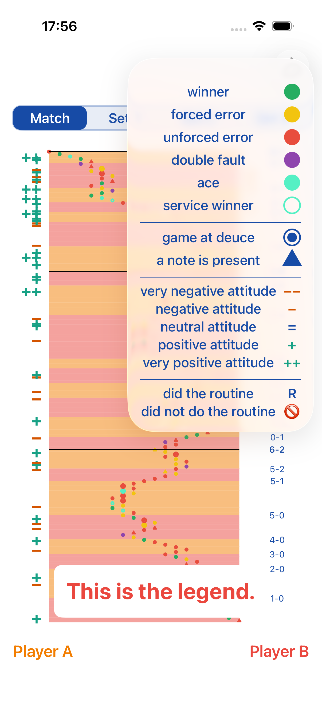
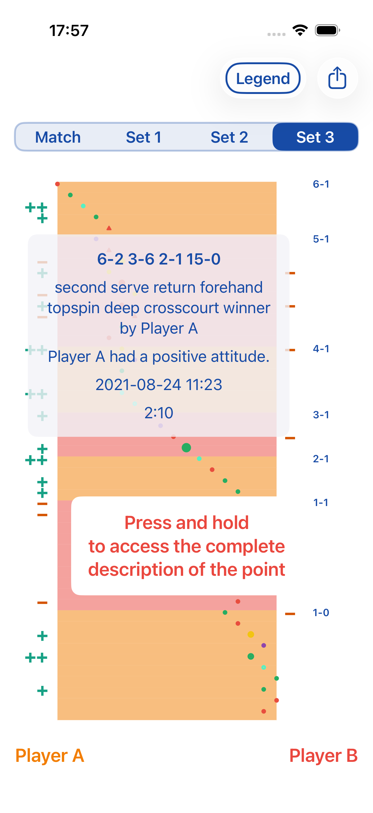
Go Pro Passez Pro
Unlock unlimited match storage and precise stroke qualification including depth, placement (crosscourt, parallel, inside-in/out), and point sequence analysis. Débloquez le stockage illimité des matchs et la qualification précise des coups, y compris la profondeur, le placement (croisé, parallèle, décroisé, long de ligne) et l'analyse de la séquence des points.
- Unlimited Match Library Bibliothèque de matchs illimitée
- Placement Analysis Analyse du placement
- 2nd Stroke Tracking Suivi du 2ème coup
- Advanced Error Detail Détails avancés sur les erreurs